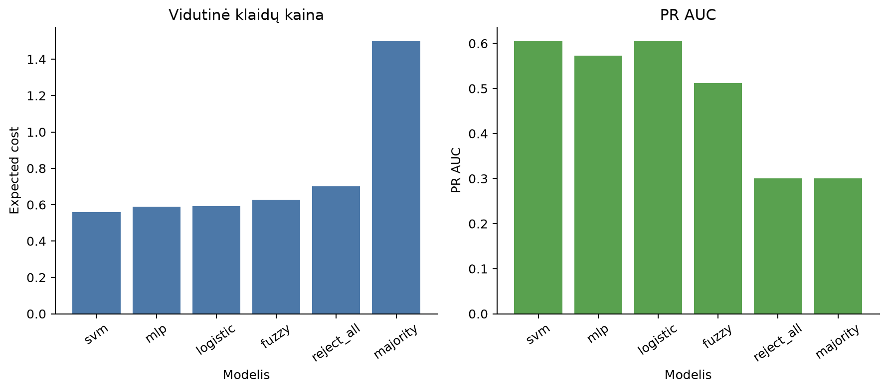
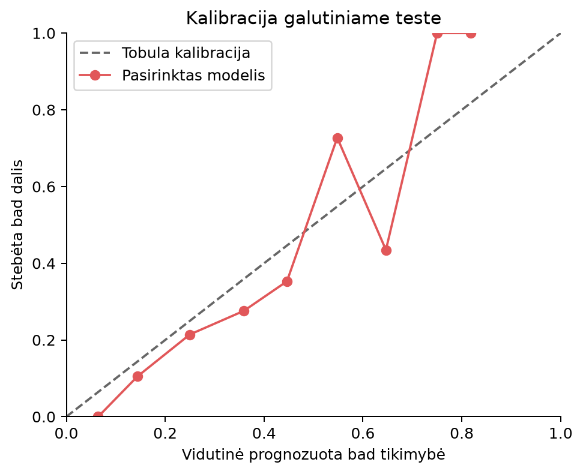

Karolis Lapinskas · PEPfm-26 · Galutinio darbo eksperimentas
OpenML credit-g: 1 000 įrašų, 20 požymių. Plėtros dalis: 800 įrašų, 5 × 3 kartotinis stratifikacinis vertinimas. Galutinis testas: 200 įrašų.
| Metodas | Balanced accuracy | AP (PR) | Brier | Klaidų kaina |
|---|---|---|---|---|
| svm | 0.665 | 0.605 | 0.170 | 0.558 |
| mlp | 0.635 | 0.572 | 0.179 | 0.590 |
| logistic | 0.661 | 0.605 | 0.178 | 0.592 |
| fuzzy | 0.595 | 0.512 | 0.250 | 0.628 |
| reject_all | 0.500 | 0.300 | 0.700 | 0.700 |
| majority | 0.500 | 0.300 | 0.300 | 1.500 |
Parinktas modelis: svm. Pasirinkimo kriterijus: mažiausia vidutinė CV klaidų kaina, kai FN kaina yra 5, o FP kaina 1.

Balanced accuracy: 0.654 · AP: 0.678 · Brier: 0.153 · Kaina: 0.525.
AP apskaičiuotas funkcija average_precision_score. Failų stulpelis pr_auc reiškia AP, o ne trapecinę PR kreivės integraciją.
Slenkstis pasirinktas tik plėtros duomenyse: 0.15. Žemiau esantis valdiklis rodo galutinio testo diagnostiką; pagal jį modelis ir slenkstis neperrenkami.

| balanced_accuracy | pr_auc | brier_score | expected_cost | threshold | tn | fp | fn | tp | feature_set |
|---|---|---|---|---|---|---|---|---|---|
| 0.654 | 0.678 | 0.153 | 0.525 | 0.150 | 50 | 90 | 3 | 57 | all_features |
| 0.674 | 0.650 | 0.160 | 0.510 | 0.180 | 58 | 82 | 4 | 56 | without_age_and_personal_status |
| balanced_accuracy | pr_auc | brier_score | expected_cost | threshold | tn | fp | fn | tp | missing_fraction |
|---|---|---|---|---|---|---|---|---|---|
| 0.657 | 0.662 | 0.155 | 0.520 | 0.150 | 51 | 89 | 3 | 57 | 0.050 |
| 0.663 | 0.658 | 0.154 | 0.525 | 0.150 | 55 | 85 | 4 | 56 | 0.100 |
| audit | group | n | bad_recall | good_rejection_rate |
|---|---|---|---|---|
| age_group | 25_or_over | 174 | 0.936 | 0.622 |
| age_group | under_25 | 26 | 1.000 | 0.846 |
| personal_status_group | female | 63 | 0.955 | 0.732 |
| personal_status_group | other | 137 | 0.947 | 0.606 |
| test_row | error_type | actual_class | predicted_class | bad_probability | decision_threshold | duration | credit_amount | checking_status | purpose | age |
|---|---|---|---|---|---|---|---|---|---|---|
| 409 | false_negative | bad | good | 0.123 | 0.150 | 12 | 939 | >=200 | new car | 28 |
| 190 | false_negative | bad | good | 0.142 | 0.150 | 24 | 4591 | no checking | business | 54 |
| 278 | false_negative | bad | good | 0.147 | 0.150 | 6 | 4611 | no checking | furniture/equipment | 32 |
| 286 | false_positive | good | bad | 0.690 | 0.150 | 48 | 4788 | <0 | used car | 26 |
| 815 | false_positive | good | bad | 0.685 | 0.150 | 36 | 7432 | 0<=X<200 | new car | 54 |
| 501 | false_positive | good | bad | 0.673 | 0.150 | 36 | 5493 | <0 | used car | 42 |
| 735 | false_positive | good | bad | 0.665 | 0.150 | 36 | 3990 | 0<=X<200 | domestic appliance | 29 |
| 395 | false_positive | good | bad | 0.661 | 0.150 | 39 | 11760 | 0<=X<200 | education | 32 |
Tai istorinių mokomųjų duomenų prototipas. Klaidos kaina pateikta sąlyginiais vienetais. Mažos grupės ir persidengiantys CV skaidymai neleidžia šio rezultato laikyti banko sistemos patvirtinimu ar statistinio pranašumo įrodymu.
CV lentelė CSV · Testo metrikos JSON · Slenksčių diagnostika CSV